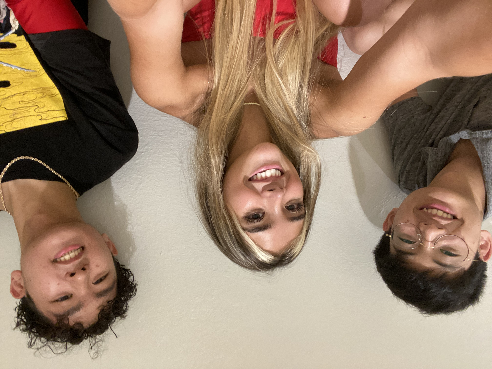

Our Vision
Our aim is to provide an accurate skin-cancer detecting model that can be utilized in places where traditional dermatologist appointments are not equally accesible to everyone.
About Us

Chen-Chi Hwang: A rising senior very passionate about CS and AI, planning to study NLP and HCI in the future!
Manuela Berrio: A rising senior, proud Colombian, and women in STEM aiming to leave a print in this world.
Jayden Bautista: A rising high school senior in Texas, and planning to study both applied mathematics and artificial intelligence in college.